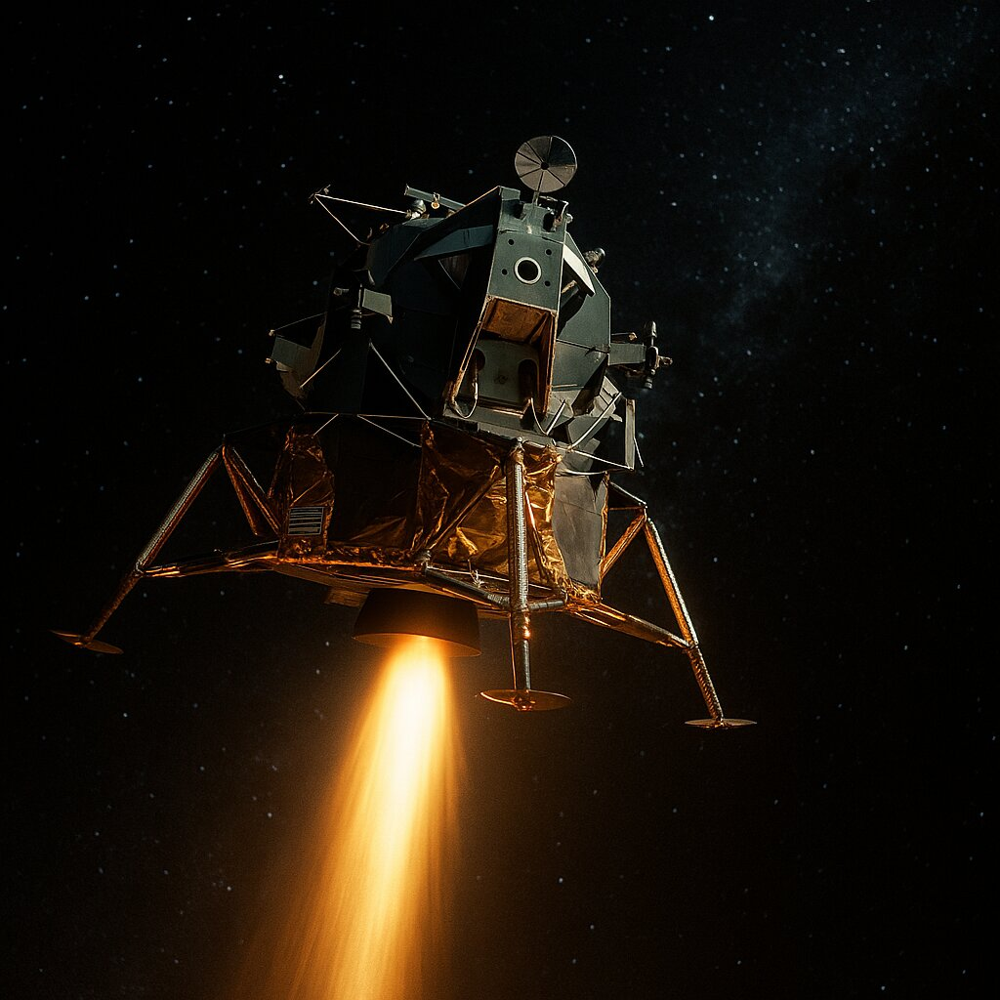

Speed Up or Coast?
⚠️ The Situation
- The free-return path will get them home—but slowly, and aimed at the Indian Ocean, far from the recovery fleet
- The recovery ships are waiting in the Pacific
- Solution: a major burn 2 hours after pericynthion (PC+2) to speed up and retarget
- Risk: the LM Descent Engine must run about 4½ minutes in deep space
- Longest burn yet—within design limits but high-stakes

🔥 PERFORM PC+2 BURN
Fire LM descent engine for extended burn to retarget
✓ Advantages
- Cuts roughly 10 hours off return time
- Targets Pacific recovery zone near USS Iwo Jima
- Less time for systems to fail
- Faster medical attention for crew
- Ships already positioned and waiting
✕ Disadvantages
- Long engine burn (about 4½ minutes) stresses systems
- Uses significant fuel (~860 ft/s delta-V)
- Any failure during burn leaves crew stranded
- Engine designed for lunar landing, not deep space burns
- Single point of failure—if engine quits, no backup
🌊 COAST ON FREE-RETURN
Accept current trajectory—no additional burn
✓ Advantages
- No risk of engine failure during critical burn
- Conserves fuel for emergency corrections
- Simple—no complex maneuvers
- Systems already stressed—why add more risk?
✕ Disadvantages
- Longer mission time (roughly 10 hours extra)
- Lands in wrong ocean, far from recovery fleet
- More time for systems to fail
- Longer exposure to cold, dehydration, CO2
- Recovery ships must reposition—delays rescue
🤔 WHAT SHOULD MISSION CONTROL DECIDE?
👆 Choose one of the options above 👆
NASA's Decision
✓ PERFORM THE PC+2 BURN
CAPCOM Vance Brand radioed the call from Houston: "Jim, you are Go for the burn. Go for the burn." Lovell answered: "Roger. I understand. Go for the burn."
GET 79:27:38 - The Burn
Burn Parameters:
- Duration: 4 minutes, 24 seconds
- Velocity change: ~860 ft/s of delta-V
- Time saved: about 10 hours
- New target: splashdown moved from the Indian Ocean to the Pacific recovery zone near USS Iwo Jima
The Execution:
All three astronauts rode it out in Aquarius—the Command Module above them was powered down, dark, and silent. Lovell brought the engine up in stages: 10 percent throttle, then 40 percent, then full power, while Haise watched the LM's systems. The engine fired perfectly.
Lovell: "We're burning. 40 percent."
Lovell: "One hundred percent."
Brand (Houston): "Aquarius, you were looking good at 2 minutes. Still looking good."
Lovell: "Shutdown."
Brand: "Roger. Shutdown. ... Good burn, Aquarius." — Actual radio transmissions, GET 79:27–79:33 (Apollo 13 Flight Journal)
Result: Perfect Burn!
The LM descent engine performed flawlessly—never missed a beat.
New splashdown time: about 10 hours earlier, in the Pacific Ocean near the rescue ships.
Why This Mattered:
- ✓ Shortened the journey: Less time in freezing, cramped LM
- ✓ Reduced system stress: Fewer hours for failures to occur
- ✓ Positioned recovery: Ships ready and waiting in target zone
- ✓ Crew morale: Knowing they'd get home faster helped them endure
Why it was the right decision: The crew was grateful for every hour saved. Fred Haise was coming down with a painful kidney infection. The cold was unbearable. Getting home about 10 hours sooner may have saved their lives—but reasonable engineers argued the other side, too. Firing a landing engine for over four minutes with no backup was a real gamble.
🎬 Dramatization — not a documented quote: Lovell is often paraphrased as saying the engine "ran like a sewing machine." No transcript or memoir records that line.
📚 Sources for Skeptics
Would you have coasted instead? Plenty of smart people weighed that option in 1970. Arguing with the answer is good engineering—so check the record yourself:
- Apollo 13 Flight Journal — every radio call between the crew and Houston, including the full PC+2 burn sequence
- Apollo 13 in Real Time — replay the burn with real Mission Control audio, synced to the second
- Apollo 13 Mission Report (PDF) — NASA's official engineering report, with the exact burn numbers